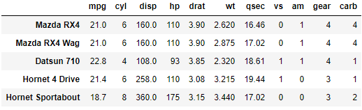

10. NumPy#
Önceki bölümlerde incelediğimiz liste veri yapısı Python’a özel ve son derece kullanışlı bir veri türüdür. Listeleri kullanarak verileri bir arada saklayabilir ve bunlar üzerinde değişiklikler yapabilir, yeni veriler ekleyebilir ya da mevcut verileri çıkarabiliriz. Ancak, liste veri yapısında günlük hayattaki kullanımlarımızda çok ihtiyaç duyacağımız bir özellik yoktur. Liste veri yapısında, veriler üzerinde analizler yapmak, matematiksel ya da istatistiksel işlemler uygulamak mümkün olmamaktadır. Halbuki R ya da Matlab gibi diğer dillerde bu tip işlemler kolaylıkla yapılabilmektedir.
Diyelim ki bir sınıftaki öğrencilerin iki sınavdan aldıkları notları iki listede kaydettiniz ve şimdi de ortalamalarını hesaplamak istiyorsunuz. Normalde bunu basit bir şekilde (sinav_1 + sinav_2) / 2 yazarak yapabilmelisiniz. Ancak Python listelerinde bu işlemi yapmak istediğimizde aşağıdaki hata mesajını alıyoruz. Çünkü Python normal liste veri yapıları ile matematik işlemi yapmayı bilmiyor.
sinav_1 = [100, 84, 76, 48, 36, 77, 90]
sinav_2 = [95, 78, 66, 57, 75, 89, 95]
(sinav_1 + sinav_2) / 2
Traceback (most recent call last):
File "<stdin>", line 1, in <module>
TypeError: unsupported operand type(s) for /: 'list' and 'int'
NumPy paketi listelerde matematiksel işlem yapabilmek için geliştirilmiştir. Paket ismi Numeric Python (Sayısal Python) kelimelerinin kısaltılmasından oluşmuştur. NumPy paketinde temel veri yapısı listeler yerine NumPy dizileridir (NumPy array). Numpy dizilerinin normal listelerden farkı, listeler farklı türde veriler içerebiliyorken, Numpy dizilerinin sadece tek türde veriler içerebilmesidir. Bir Numpy dizisine farklı veri türleri tanımlarsanız, bunların hepsi aynı veri tipine çevrilir. Örneğin, diziye sayısal veriler ve metin verileri tanımlanırsa, metinler sayısal veriye çevrilemeyeceği için tüm sayısal veriler metin veri tipine çevrilir.
import numpy as np
numpy_dizi = np.array(["Adana", 1, "Adıyaman", 2, "Afyon", 3])
print(numpy_dizi)
['Adana' '1' 'Adıyaman' '2' 'Afyon' '3']
NumPy paketin kullanabilmek için öncelikle her oturumda paketi içeri aktarmalıyız.
import numpy
Bir paketi içeri aktardıktan sonra pakette yer alan fonksiyon ve metodları kullanabilmek için paket ismi ve sonrasında nokta (numpy.) yazmak gerektiğini önceki bölümde görmüştük. Her defasında numpy yazmak zor geliyorsa daha kısa bir isim de belirlenebilir.
import numpy as np
olcum = [23, 34, 54, 42, 34, 22, 10, 18, 22]
olcum_np = np.array(olcum)
olcum_np = np.array([23, 34, 54, 42, 34, 22, 10, 18, 22])
olcum_np
array([23, 34, 54, 42, 34, 22, 10, 18, 22])
print(olcum_np)
[23 34 54 42 34 22 10 18 22]
Görüldüğü gibi, numpy array veri tipinin görünüşte listeden hiçbir farkı yoktur.
Yukarıda yapmaya çalıştığımız not ortalaması işlemini şimdi numpy array ile yapmaya çalışalım.
sinav_1 = [100, 84, 76, 48, 36, 77, 90]
sinav_2 = [95, 78, 66, 57, 75, 89, 95]
sinav_1_np = np.array(sinav_1)
sinav_2_np = np.array(sinav_2)
ortalama = (sinav_1_np + sinav_2_np) / 2
print(ortalama)
[97.5 81. 71. 52.5 55.5 83. 92.5]
Numpy dizilerinde işlemler eleman bazında gerçekleşir. Yukarıdaki örnekte sinav_1_np ve sinav_2_np arasında toplama işlemi yaptığımızda bunların aynı sıradaki elemanları toplandı.
Numpy paketinin matematiksel işlemler yapmak için geliştirilmiş olduğunu belirtmiştik. Bu nedenle listeler için kullanılan metodların bazıları Numpy dizilerinde işe yaramayabilir ya da farklı sonuçlar verebilir. Örneğin, iki listeye + işleminin uygulanması, bu iki listeyi birleştirir.
sinav_1 + sinav_2
[100, 84, 76, 48, 36, 77, 90, 95, 78, 66, 57, 75, 89, 95]
Diğer taraftan iki Numpy dizisine + işlemi uygulanırsa bu, matematiksel toplama anlamına gelir ve iki dizinin aynı sıradaki elemanları aritmetik olarak toplanır.
sinav_1_np + sinav_2_np
array([195, 162, 142, 105, 111, 166, 185])
Numpy dizilerinde sıra numarasına göre eleman seçme, normal listelerle aynıdır.
sinav_1_np[0]
100
sinav_2_np[3]
57
Numpy dizilerinde istenen şartları taşıyan elemanları seçtirmek de mümkündür. Bunun için mantıksal operatörlerden faydalanılır. Diyelim ki yukarıda hesapladığınız ortalama dizisinde, geçme notu olan 70’in altındaki ortalamaları görmek istiyorsunuz.
Önce, hangi sıradaki elemanların istenen şartı sağladığını belirlemeliyiz.
ortalama < 70
array([False, False, False, True, True, False, False])
İncelediğimiz dizi ile aynı uzunlukta bir mantıksal (bool) dizi ürettik. Bu dizinin elemanları aranan şartı sağlıyorsa True, sağlamıyorsa False olacaktır. Şimdi, ortalama dizisinde istediğimiz şartları sağlayan elemanları seçmek için yukarıda yazdığımız mantıksal ifadeyi dizinin kendisine uygulayacağız.
ortalama[ortalama < 70]
array([52.5, 55.5])
Numpy modülünde sayı dizileri oluşturmak için .arange(), .linspace() veya .logspace() metodlarını kullanabiliriz. Bunların kullanımlarına ilişkin örneklere bakalım.
# 1'den 10'a kadar sayılar. Argüman olarak 1 ve 11 yazdığımıza dikkat edin.
np.arange(1, 11)
array([ 1, 2, 3, 4, 5, 6, 7, 8, 9, 10])
# 1'den 10'a kadar sayılar. 2'şer artarak
np.arange(1, 11, 2)
array([1, 3, 5, 7, 9])
# linspace (linear space): -2 ve 2 arasında 21 adet eşit aralıklı sayı
np.linspace(-2, 2, 21)
array([-2. , -1.8, -1.6, -1.4, -1.2, -1. , -0.8, -0.6, -0.4, -0.2, 0. ,
0.2, 0.4, 0.6, 0.8, 1. , 1.2, 1.4, 1.6, 1.8, 2. ])
# logspace (logaritmic space): dizideki sayıları 10'un üssü olarak yazar.
# Aşağıdaki dizide 10^0, 10^1, 10^2 ve 10^3 sayıları üretilir.
np.logspace(0, 3, 4)
array([ 1., 10., 100., 1000.])
10.1. Çok Boyutlu NumPy Dizileri#
Şimdiye kadar gördüğümüz liste, sözlük, numpy dizisi gibi veri yapıları hep bir boyutlu nesnelerdi. Bir boyuttan kastımız, bunların sadece uzunluğunun olduğu. Noktaların yan yana gelip tek boyutlu geometrik şekiller olan doğruları oluşturması gibi veriler yan yana gelerek tek boyutlu veri nesnesi olan listeleri veya dizileri meydana getirebilir. Ama, birden fazla boyutu olan veri yapıları da vardır. Örneğin aşağıdaki tablo satır ve sütunlardan yani iki boyuttan oluşmaktadır.

Yukarıdaki tabloda görülen mtcars veri seti iki boyutlu bir veri nesnesine örnek verilebilir. Nasıl ki iki boyutlu geometrik şekillerin eni ve boyu varsa iki boyutlu veri yapılarının da satır ve sütunları vardır.
Aynı veya farklı özelliklere sahip iki boyutlu veri tabloları üst üste getirdiğimizi düşünelim. Tabii ki bilgisayar hafızasında veriler bu şekilde saklanmaz. Ancak düşünme kolaylığı olması için yukarıdaki gibi ama farklı veriler içeren 10 tane tabloyu üst üste koyarsak üç boyutlu küpe benzeyen bir veri yapısı ile karşılaşacağız. Veriler iki veya üç boyutlu olabileceği gibi çok daha fazla boyuta da sahip olabilir.
Bir veri nesnesinin kaç boyutlu olduğu o veri nesnesindeki herhangi bir veriye erişmek için kaç tane bilgiye ihtiyaç duyduğumuzla da ilgilidir. Örneğin, bir listede herhangi bir veriye ulaşmak için sadece verinin listedeki sıra numarasını (indeksini) bilmek yeterlidir. Yukarıdaki gibi bir tabloda ise herhangi bir veriye erişebilmek için o verinin hangi satırda ve sütunda olduğunu bilmeliyim. Yani iki bilgiye ihtiyacım var. Üç boyutlu bir veri küpünde ise herhangi bir veriye erişebilmek için verinin satır, sütun ve yüksekliğini bilmeliyim. Aynısı, daha yüksek boyutlu veri nesneleri için de geçerlidir.
Numpy dizileri aslında n-boyutlu diziler olarak tanımlanmıştır. Bir numpy dizisinin türünü type() fonksiyonunu kullanarak görmek istediğimizde numpy.ndarray olduğunu görürüz. Bu ifadedeki ndarray ifadesi, n dimensional array yani n boyutlu dizi anlamına gelir.
hisse = np.array([3.4, 3.6, 3.9, 4.2, 4.0, 3.8])
type(hisse)
numpy.ndarray
Numpy paketini kullanarak 2 boyutlu bir veri nesnesi oluşturmak için listelerden oluşan bir listeyi kullanabiliriz.
hisse_fiyat = np.array([[3.57, 4.42, 5.25, 12.50, 29.30],
[3.43, 4.69, 5.00, 11.00, 32.12],
[3.15, 4.35, 4.95, 10.50, 29.00]])
print(hisse_fiyat)
[[ 3.57 4.42 5.25 12.5 29.3 ]
[ 3.43 4.69 5. 11. 32.12]
[ 3.15 4.35 4.95 10.5 29. ]]
Yukarıda yer alan iki boyutlu hisse_fiyat dizisini aynı zamanda her biri 5 veriden oluşan arka arkaya 3 dizi şeklinde de tarif edebiliriz. Ama veri analizi mantığını oturtmak ve bundan sonraki konular için de kolaylık olması açısından veri nesnesini bir tablo olarak düşünmek daha faydalı olacaktır.
Numpy dizilerinde eleman seçmek için genel kural aşağıdaki gibidir:
dizi[başlangıç:bitiş:adım]
Başlangıç, alınacak ilk, bitiş ise son endeks numarasını belirtir. Adım ise kaçar adım atlayarak gidileceğini gösterir. Bu değerlerden herhangi birisi girilmezse varsayılan değerler alınır. Varsayılan değerler, başlangıç için 0, bitiş için dizideki son endeks numarası yani dizinin boyutu, adım içinse 1’dir.
dizi = np.arange(20)
print(dizi)
[ 0 1 2 3 4 5 6 7 8 9 10 11 12 13 14 15 16 17 18 19]
# İlk 7 eleman
dizi[:7]
array([0, 1, 2, 3, 4, 5, 6])
# 10. endeks numarasından sonraki elemanlar
dizi[10:]
array([10, 11, 12, 13, 14, 15, 16, 17, 18, 19])
# 5. endeks numarasından başlayıp 10. endeks numarasına kadar
dizi[5:10]
array([5, 6, 7, 8, 9])
# Baştan itibaren üçer atlayarak tüm elemanlar
dizi[::3]
array([ 0, 3, 6, 9, 12, 15, 18])
İki veya daha yüksek boyutlu dizilerde aynı kuralı, her boyut için yazdığımız endekslerin arasında virgül koyarak belirtebiliriz.
matris = dizi.reshape(4,5)
matris
array([[ 0, 1, 2, 3, 4],
[ 5, 6, 7, 8, 9],
[10, 11, 12, 13, 14],
[15, 16, 17, 18, 19]])
# İkinci satır, üçüncü sütun
matris[2:3, 3:4]
array([[13]])
# İkinci satıra üçüncü sütuna kadar olan kısım
matris[:2, :3]
array([[0, 1, 2],
[5, 6, 7]])
10.2. NumPy Dizileri ile İşlemler#
Bir numpy dizisinin boyutlarını görmek için .shape() metodunu kullanabiliriz.
hisse_fiyat.shape
(3, 5)
Şimdi de üç boyutlu bir dizi oluşturalım.
dizi = np.array([[[2, 3, 4, 5],
[6, 7, 8, 9],
[10,11,12,13]],
[[1, 2, 3, 4],
[5, 6, 7, 8],
[9,10,11,12]]])
print(dizi)
[[[ 2 3 4 5]
[ 6 7 8 9]
[10 11 12 13]]
[[ 1 2 3 4]
[ 5 6 7 8]
[ 9 10 11 12]]]
Üç boyutlu dizinin yüksekliğinin 2, satır sayısının 3 ve sütun sayısının 4 olduğu görülüyor.
Bir dizinin transpozunu almak için .T metodu kullanılır. Yukarıdaki dizilerin transpozlarını alalım.
hisse_fiyat.T
array([[ 3.57, 3.43, 3.15],
[ 4.42, 4.69, 4.35],
[ 5.25, 5. , 4.95],
[12.5 , 11. , 10.5 ],
[29.3 , 32.12, 29. ]])
dizi.T
array([[[ 2, 1],
[ 6, 5],
[10, 9]],
[[ 3, 2],
[ 7, 6],
[11, 10]],
[[ 4, 3],
[ 8, 7],
[12, 11]],
[[ 5, 4],
[ 9, 8],
[13, 12]]])
Bir numpy dizisinin farklı eksenleri (yükseklik, satır veya sütun) üzerindeki toplamları bulmak için .sum() metodu kullanılır. Toplamı bulmak için istediğimiz eksen numarasını parantez içinde belirtiyoruz.
İki boyutlu dizilerde sütun 0, satır ise 1 indeksi ile gösterilir. Üç boyutlu dizilerde ise yükseklik sıfır, sütun bir ve satır ise iki indeks numarası ile gösterilir.
dizi.sum(0) # Yükseklik toplamları
array([[ 3, 5, 7, 9],
[11, 13, 15, 17],
[19, 21, 23, 25]])
dizi.sum(1) # Sütun toplamları
array([[18, 21, 24, 27],
[15, 18, 21, 24]])
dizi.sum(2) # Satır toplamları
array([[14, 30, 46],
[10, 26, 42]])
Kaç boyutlu olursa olsun bir numpy dizisinin mutlaka aynı türdeki verilerden meydana gelmesi gerektiğini unutmayın.
Aynı şekilde, herhangi bir eksen boyunca birikimli toplamları bulmak için .cumsum() metodu kullanılır.
hisse_fiyat.cumsum(1) # Satırların birikimli toplamları
array([[ 3.57, 7.99, 13.24, 25.74, 55.04],
[ 3.43, 8.12, 13.12, 24.12, 56.24],
[ 3.15, 7.5 , 12.45, 22.95, 51.95]])
Numpy dizilerinde kullanılabilen diğer metodlar aşağıdaki tabloda açıklanmıştır.
Metod |
Açıklama |
|---|---|
dizi.max() |
Verilen eksendeki maksimum değerler |
dizi.argmax() |
Verilen eksendeki maksimum değerlerin sıra numarası |
dizi.min() |
Verilen eksendeki minimum değerler |
dizi.argmin() |
Verilen eksendeki minimum değerlerin sıra numarası |
dizi.ptp() |
Verilen eksendeki maksimum ve minimum değerler arasındaki fark |
dizi.clip(min, max) |
Dizide yer alan min ve max arasındaki değerleri aynen, min’den düşük değerleri min, max’tan yüksek değerleri ise max olarak iletir. |
dizi.round(a) |
Dizide yer alan sayıları a ondalık basamağa kadar yuvarlar. |
dizi.trace() |
Dizideki köşegenler toplamını hesaplar |
dizi.mean() |
Verilen eksen boyunca ortalama değerleri hesaplar |
dizi.var() |
Verilen eksen boyunca varyans değerlerini hesaplar |
dizi.std() |
Verilen eksen boyunca standart sapmaları hesaplar |
dizi.prod() |
Verilen eksendeki sayıların çarpımını hesaplar |
dizi.cumprod() |
Verilen eksendeki sayıların birikimli çarpımını hesaplar |
dizi.sort() |
Verilen eksendeki verilerin sıralanmış halini iletir. |
Bir listenin herhangi bir sırasındaki veriye nasıl ulaşacağımızı daha önce görmüştük. Örneğin listenin 3. sırasındaki elemanın ne olduğunu görmek için liste[2] yazmamız yeterlidir. Python’da sıra numaralarının sıfırdan başladığını hatırlayın. Numpy dizileri için de aynı metodu kullanabiliriz. Sadece, dizi kaç boyutlu ise o kadar sayıda bilgiye ihtiyacımız olacaktır. Örneğin yukarıda yer alan hisse_fiyat dizisinin 2. satırının 4. sırasındaki veriye ulaşmak için hisse_fiyat[1][3] yazmamız yeterlidir. Burada önce hisse_fiyat[1] yazarak ikinci sıradaki satırı seçiyoruz. Sonra da bu satırdaki 4. elemanı seçmek için sonuna [3] ekliyoruz. Bunu yapmanın daha kolay bir yolu ise ayrı ayrı köşeli parantezler kullanmak yerine satır ve sütun indeksini tek bir köşeli parantez içinde virgülle ayırarak göstermektir.
hisse_fiyat[1][3]
11.0
hisse_fiyat[1,3]
11.0
Peki tek bir veri yerine belirli satır ve sütunları seçmek için ne yapmamız gerekir? Örneğin sadece birinci ve ikinci satırları seçmek istersem ne yazmalıyım?
hisse_fiyat[0:2, :]
array([[ 3.57, 4.42, 5.25, 12.5 , 29.3 ],
[ 3.43, 4.69, 5. , 11. , 32.12]])
Python indeksleme mantığında 0:2 yazdığımızda seçilen 0 indeks numarasına sahip yani ilk sıradaki elemanın seçildiğini ancak 2 indeks numarasına sahip elemanın seçilmediğini unutmayın. Yani, 0:2 yazdığımızda, 0 ve 1 indeks numarasına sahip satırlar seçiliyor. Sütunlar arasında seçim yapmayıp bütün sütunları görmek istediğimiz için virgülden sonra sadece iki nokta (:) koyuyoruz.
Şimdi de sadece birince ve ikinci satırların, üçüncü ve dördüncü sütunlarını seçtirelim. Üçüncü ve dördüncü sütunların indeks numaraları 2 ve 3’tür. Bu nedenle biz indeks numaralarını 2, 3 ve 4’ü içerecek şekilde yazmalıyız: 2:4.
print(hisse_fiyat[0:2, 2:4])
[[ 5.25 12.5 ]
[ 5. 11. ]]
Numpy dizilerinde aritmetik işlemler yapmak da mümkündür.
a = np.array([[3, 4, 7, 4],
[2, 9, 4, 2],
[1, 5, 8, 3]])
b = np.array([[4, 2, 8, 9],
[6, 3, 6, 1],
[3, 2, 4, 2]])
a + b
array([[ 7, 6, 15, 13],
[ 8, 12, 10, 3],
[ 4, 7, 12, 5]])
a - b
array([[-1, 2, -1, -5],
[-4, 6, -2, 1],
[-2, 3, 4, 1]])
a / b
array([[0.75 , 2. , 0.875 , 0.44444444],
[0.33333333, 3. , 0.66666667, 2. ],
[0.33333333, 2.5 , 2. , 1.5 ]])
a * b
array([[12, 8, 56, 36],
[12, 27, 24, 2],
[ 3, 10, 32, 6]])
İki numpy dizisi arasında matris çarpımı uygulamak için np.matmul() metodu uygulanır.
a
array([[3, 4, 7, 4],
[2, 9, 4, 2],
[1, 5, 8, 3]])
b
array([[4, 2, 8, 9],
[6, 3, 6, 1],
[3, 2, 4, 2]])
a = np.array([[3, 4, 7, 4],
[2, 9, 4, 2],
[1, 5, 8, 3]])
b = np.array([[4, 6, 3],
[2, 3, 2],
[8, 6, 4],
[9, 1, 2]])
np.matmul(a, b)
array([[112, 76, 53],
[ 76, 65, 44],
[105, 72, 51]])
Önceki sayfalarda gösterdiğimiz numpy metodlarını uygulamanın bir başka yolu da istediğimiz metodu np.metod_ismi() şeklinde kullanmaktır. Örneğin, bir dizinin istediğimiz satır veya sütununun toplamını bulmak için np.sum(dizi[:, 1]) metodunu uygulayabiliriz.
np.sum(a[:, 1]) # İkinci sütundaki sayıların toplamı
18
np.mean(a[:, 2]) # Üçüncü sütundaki sayıların ortalaması
6.333333333333333
np.median(a[1,:]) # İkinci satırdaki sayıların medyanı
3.0
dizi = np.array([[2.34, 3.76],
[4.23, 5.76],
[1.18, 9.32],
[7.43, 12.25],
[3.14, 2.78],
[11.45,14.32],
[5.78, 4.43],
[8.87, 9.43]])
np.std(dizi[:, 0]) # Birinci sütun standart sapma
3.285786625756456
np.corrcoef(dizi[:,0], dizi[:,1]) # Birinci ve ikinci sütunlar arasındaki korelasyon katsayısı
array([[1. , 0.70054776],
[0.70054776, 1. ]])
Numpy dizilerine döngü uygularken dikkatli olunması gerekir. Şimdi yukarıda gördüğümüz iki boyutlu hisse_fiyat dizisini ele alalım. Önce bu diziye bir for döngüsü uyguladığımızda ne olduğuna bakalım.
hisse_fiyat = np.array([[3.57, 4.42, 5.25, 12.50, 29.30],
[3.43, 4.69, 5.00, 11.00, 32.12],
[3.15, 4.35, 4.95, 10.50, 29.00]])
print(hisse_fiyat)
[[ 3.57 4.42 5.25 12.5 29.3 ]
[ 3.43 4.69 5. 11. 32.12]
[ 3.15 4.35 4.95 10.5 29. ]]
for i in hisse_fiyat:
print(i)
[ 3.57 4.42 5.25 12.5 29.3 ]
[ 3.43 4.69 5. 11. 32.12]
[ 3.15 4.35 4.95 10.5 29. ]
Döngüyü doğrudan doğruya numpy dizisine uyguladığımızda dizi içindeki listeleri ya da diğer bir deyişle satırları görüyoruz. Ancak biz tek tek elemanlara erişmek istiyoruz diyelim. Bunun için yine numpy paketindeki .nditer() metodunu kullanmamız gerekir.
for i in np.nditer(hisse_fiyat):
print(i)
3.57
4.42
5.25
12.5
29.3
3.43
4.69
5.0
11.0
32.12
3.15
4.35
4.95
10.5
29.0
10.3. Kullanışlı Numpy Metodları#
Önceki bölümde en çok kullanılan numpy dizilerine örnekler vermiştik. Bu bölümde işlemlerinizde kullanabileceğiniz ve zaman kazandıracak ilave numpy fonksiyon ve metod örnekleri yer almaktadır. Burada aktarılanlar dışında çok sayıda numpy metodu bulunduğunu unutmayın. Burada sadece örnek olarak seçilenler anlatılmaktadır.
np.amax(): Bir numpy dizisinde istenen eksendeki maksimum değerleri iletir.
x = np.random.uniform(low=1, high=50, size=16).reshape(4,4)
x
array([[15.02647757, 25.65382802, 32.61665583, 10.60059968],
[49.77680153, 40.02389025, 22.52603295, 49.91002577],
[ 5.84360103, 15.88067331, 4.96765295, 23.83563936],
[49.30074895, 14.30231251, 22.28037783, 38.72813575]])
np.amax(x, axis=0) # Her sütundaki maksimum değer
array([49.77680153, 40.02389025, 32.61665583, 49.91002577])
np.amax(x, axis=1) # Her satırdaki maksimum değer
array([32.61665583, 49.91002577, 23.83563936, 49.30074895])
np.amin(): Bir numpy dizisinde istenen eksendeki minimum değerleri iletir. np.amax() ile aynı şekilde kullanlır.
np.argsort(): Bir dizinin elemanlarının, dizi küçükten büyüğe sıralandığında kaçıncı sırada olacağını belirtir.
x = np.array([4, 2, 1, 6, 9, 3, 15, 11, 10, 7])
x
array([ 4, 2, 1, 6, 9, 3, 15, 11, 10, 7])
x.argsort()
array([2, 1, 5, 0, 3, 9, 4, 8, 7, 6], dtype=int64)
np.concatenate(): İki numpy dizisini istenen eksenlerden birleştirmek için kullanılır. Örneğin iki boyutlu (matris) iki diziyi birleştirirken, axis = 0 seçilirse satırları yani alt alta, axis = 1 seçilirse sütunları yani yan yana birleştirme işlemi gerçekleştirilir.
x = np.arange(1, 7).reshape(3,2)
y = np.arange(7, 13).reshape(3,2)
x
array([[1, 2],
[3, 4],
[5, 6]])
y
array([[ 7, 8],
[ 9, 10],
[11, 12]])
np.concatenate([x,y], axis=0)
array([[ 1, 2],
[ 3, 4],
[ 5, 6],
[ 7, 8],
[ 9, 10],
[11, 12]])
np.concatenate([x,y], axis=1)
array([[ 1, 2, 7, 8],
[ 3, 4, 9, 10],
[ 5, 6, 11, 12]])
np.full(): İstenen boyutta, değerde ve veri türünde numpy dizisi oluşturur. Veri türü argümanı (dtype) seçime bağlıdır, kullanılmayabilir.
shape: dizinin boyutları, (3,2) gibi
fill_value: Dizideki elemanların değerleri
dtype: Dizi elemanlarının veri türleri
np.full((3,2), 2.5)
array([[2.5, 2.5],
[2.5, 2.5],
[2.5, 2.5]])
np.intersect1d(): İki veya daha fazla numpy dizisindeki ortak elemanları seçer.
x = [1, 3, 5, 7, 9, 11, 13, 15]
y = [3, 6, 9, 11, 13]
np.intersect1d(x,y)
array([ 3, 9, 11, 13])
np.isin(): Aranan elemanların bir liste veya dizide olup olmadığını gösterir.
x = [1, 3, 5, 7]
dizi = [3, 4, 5, 8, 9, 10]
np.isin(x, dizi)
array([False, True, True, False])
np.isnan(): Bir dizideki verilerin NaN (Not a Number: Bir sayı değil) olup olmadığını görmek için kullanılır.
x = np.log([ 3, 4, -5]);
np.isnan(x)
C:\Users\ilker.arslan\AppData\Local\Temp\ipykernel_29588\848890117.py:1: RuntimeWarning: invalid value encountered in log
x = np.log([ 3, 4, -5]);
array([False, False, True])
np.ones(): Birlerden meydana gelen istenen boyutta numpy dizisi oluşturur.
np.ones(3)
array([1., 1., 1.])
np.ones((3,2))
array([[1., 1.],
[1., 1.],
[1., 1.]])
np.repeat(): Tekrar eden elemanlardan meydana gelen bir dizi oluşturur.
np.repeat(2, 5)
array([2, 2, 2, 2, 2])
np.reshape(): Bir numpy dizisinin boyutlarını yeniden belirlemek için kullanılır.
x = np.arange(1, 13)
x
array([ 1, 2, 3, 4, 5, 6, 7, 8, 9, 10, 11, 12])
x.reshape(3, 4)
array([[ 1, 2, 3, 4],
[ 5, 6, 7, 8],
[ 9, 10, 11, 12]])
np.setdiff1d(): Bir dizide olup ikinci dizide olmayan elemanları seçmek için kullanılır.
x = [1, 3, 5, 7, 9, 11, 13, 15]
y = [3, 6, 9, 11, 13]
np.setdiff1d(x,y)
array([ 1, 5, 7, 15])
np.unique(): Bir dizideki tekil değerleri gösterir.
x = np.array([3, 4, 6, 3, 2, 2, 3, 4, 2, 2, 4, 3, 3, 2])
np.unique(x)
array([2, 3, 4, 6])
np.where: Bir numpy dizisinde istenen şartları sağlayan elemanları seçer.
dizi = np.arange(0, 101)
np.where(dizi % 10 == 0)
(array([ 0, 10, 20, 30, 40, 50, 60, 70, 80, 90, 100], dtype=int64),)
np.zeros(): Sıfırlardan meydana gelen istenen boyutta numpy dizisi oluşturur.
np.zeros(3)
array([0., 0., 0.])
np.zeros((3,2))
array([[0., 0.],
[0., 0.],
[0., 0.]])
10.4. Alıştırmalar#
Sadece boolean False değerinden oluşan 4 x 4 boyutunda bir numpy dizisi (numpy array) oluşturun.
1’den 1000’e kadar sayıların olduğu bir numpy array (dizi) oluşturun ve bu dizide 18 ile tam bölünen sayıları seçen bir sorgu yazın.
Bir numpy dizisindeki en büyük 3 elemanı seçecek tek satırlık bir kod yazın.
Fonksiyonlar bölümünde yazdığınız liste sıralama fonksiyonunu bu defa np.argmin() metodunu kullanarak yazın.